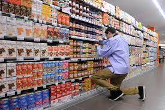

Wat voor werk doe ik?
Momenteel werk ik bij de Dirk van den Broek als vakkenvuller. Ik vind het een leuk werk, maar later wil ik iets in de ICT gaan doen.
Welk werk heb ik gedaan en doe ik nu?
Mijn allereerste bijbaantje was folders bezorgen in mijn wijk. Elke week moest ik 1 keer alle folders rondbrengen. Dit vond ik echter niet heel leuk en wilde meer verdienen/werken dus ben ik gaan solliciteren en kwam uiteindelijk terecht bij de supermarkt De Coop. De Coop waar ik werkte was een kleine lokale supermarkt, hier heb ik iets langer dan een jaar gewerkt. Daarna ben bij een andere supermarkt gaan werken genaamd Dirk van den Broek. Bij de Dirk van den Broek werk ik nu een aantal maanden en het bevalt me goed. Ik werk meestal vanaf 5 s'avonds tot half 8 ongeveer, de dagen waarop ik werk zijn verschillend.
Wat voor werk zou ik later willen doen?
Als ik klaar ben met studeren moet ik natuurlijk een echte goede baan gaan zoeken, maar wat wil ik worden?
Eerlijk gezegt zou ik nog niet weten wat ik zou willen worden. Ik weet wel dat ik in het ICT gedeelte wil werken maar daarin weet ik verder nog niet welke kant precies.